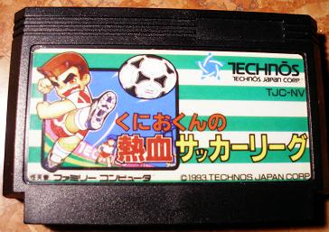

TOP 8 RETRO
5-Goal 3
Kunio-kun no Nekketsu Soccer League (くにおくんの熱血サッカーリーグ Kunio Kun no Nekketsu Sakkā Rīgu?) es un videojuego de fútbol de la franquicia Kunio-kun, desarrollado por la empresa japonesa Technos Japón en 1993 para el sistema NES/Famicom. Se diferencia de otros videojuegos de fútbol por su estilo humorístico, violencia y movimientos especiales.
Lanzamiento y Distribución
Fue lanzado el día 23 de abril de 1993 y distribuido en Japón bajo su nombre original, aunque en Sudamérica y parte del occidente se conoció popularmente como Goal! 3, en una versión no oficial adaptada para las clónicas Family Game y otros clones que aceptaban cartuchos de 60 pines. Este cambio de nombre fue tan solo un ardid para su venta en el comercio informal, ya que nada tiene que ver con los juegos Goal! y Goal! Two pertenecientes a la saga homónima creada por Jaleco. Esta adaptación solo consistió en un cambio de sprites en la palabra Technos por Goal! 3 en la pantalla inicial y en el marcador, y se mantiene todo el resto del juego original, incluido todo el texto en japonés.
◄ ►